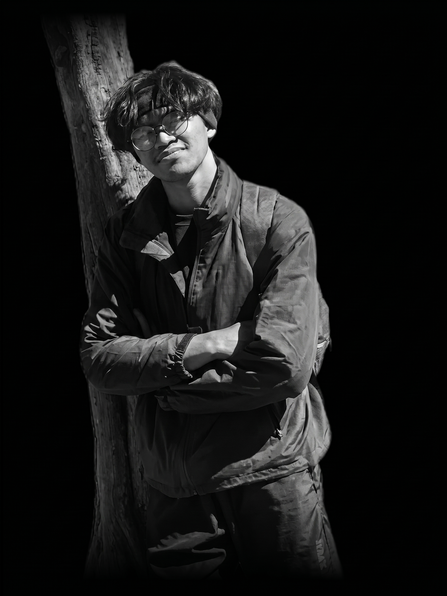

FRAGMENTS OF A JOURNEY
THE ARCHIVE
— Tempat waktu berhenti, dan cerita dihidupkan kembali —
Scroll

Kenalin, gw ajiq
Gw orangnya suka banget sama yang namanya "explore", gampang penasaran sama sesuatu yang belom pernah gw coba atau tempat yang belom pernah gw datengin. Rasanya selalu ada aja hal yang pengen gw liat, rasain, dan coba sendiri.
Gw suka alam. Gw suka gunung, laut, langit, senja, bahkan hal-hal kecil yang kadang orang lain mungkin nggak terlalu notice. Ada rasa tenang tiap kali gw bisa jauh sebentar dari keramaian.
Gunung jadi salah satu tempat yang paling gw suka. Bukan cuma karena puncaknya, atau view-nya yang indah, tapi karena selalu ada cerita di balik perjuangan buat sampai ke puncaknya. Tentang kaki yang terus dipaksa melangkah, tentang tawa dan obrolan di tengah perjalanan, sampai dengan orang yang sama-sama berjuang bareng gw.
"Buat gw, puncak bukan cuma soal tempat yang akhirnya berhasil dicapai. Puncak adalah hasil dari semua langkah, lelah, perjuangan, dan cerita sepanjang perjalanan."
Dan mungkin justru itu yang bikin setiap gunung selalu punya cerita yang beda. Salah satu momen yang paling nempel di kepala gw ketika pertama kali liat golden sunset di 3.000 mdpl. Dari situ gw makin suka sama gunung. Di tempat setinggi itu, gw cuma bisa diem, liat langit berubah warna, dan ngerasa... ternyata hidup nggak harus selalu buru-buru.
Saat ini, gw masih pengen explore lebih jauh. Masih banyak tempat yang belom sempet gw kunjungin, dan mungkin yang lebih penting explore tentang diri gw sendiri. Gw belom tau bakal jadi apa nantinya, tapi yang gw tau, gw cuma pengen terus jalan, liat lebih banyak tempat, ketemu lebih banyak orang, nyoba lebih banyak hal, dan ngumpulin lebih banyak cerita.
Karena hidup bukan cuma soal seberapa jauh kita
sampai.
Tapi tentang berapa banyak hal yang kita temuin sepanjang perjalanan.
memories
/2958 mdpl.
kenalin ini namanya gede, gunung pertama yg gw daki, dan mungkin bisa dibilang dari sinilah semuanya dimulai.
sebelumnya gw pernah beberapa kali diajak sama temen gw buat naik gunung yg ada di jateng kayak lawu, merbabu, slamet. tapi selalu gw tolak. dulu gw mikir, “ngapain naik gunung? cape. emang dapet apaan?” sampe pada akhirnya gw diajak lagi sama temen-temen gw buat naik. waktu itu kita lagi libur panjang, dan entah kenapa, kali ini gw bilang, “yaudah, gas.” nggak ada wacana, nggak ada cacicu. pesen tiket online, nyari basecamp, cabut. kita total bertujuh. tiga orang dari tangerang, empat orang dari bekasi. yang dari tangerang kita tikum di rumah temen gw, sebut aja parpes.
singkat cerita, hari h pun tiba. gw jemput temen gw yg satu lagi, jakwan namanya. abis itu langsung cabut ke parpes. sampe sana sekitar jam 6 sore. di rumah parpes kita nyantai dulu. ngopi, ngobrol, ML sematch-dua match.
jam 8 malem teng, kita otw ke bogor. gw bonceng jakwan, parpes bawa motor sendiri. empat temen kita yg dari bekasi udah otw ke bogor. kita minta shareloc salah satu dari mereka, sebut aja aca. dia shareloc, kita ikutin. sepanjang jalan masih santai. ngobrol, sesekali berhenti buat istirahat. sampai akhirnya kita udah deket sama lokasi yg aca kirim. di sini mulai janggal nih. kok bogor kaga dingin, kaga ada gunungnya juga, basecamp juga kaga keliatan, nyasar ini mah dan itu posisi jam 10 malem.
sampai akhirnya bokap parpes nelpon, “mas... kamu ngapain ke bekasi?” nah, bener kan nyasar. disitu parpes ngomel, gw sama jakwan ngakak wkwk. akhirnya kita duduk di trotoar jalan, tenangin diri, istirahat 10 menit-an. dan ya... mau nggak mau kita harus sampai bc. sampai akhirnya aca ngirim lokasi bc yg bener. barulah kita cabut lagi. sampai di bc sekitar jam 2 pagi. dan karena udah capek banget, nggak ngobrol, nggak ngapa-ngapain. langsung cari tempat tidur dan tepar.
subuhnya bangun, solat, nyarap isi pondasi, terus siap-siap buat naik. jam 8 pagi, akhirnya pendakian pertama gw bener-bener dimulai. awal-awal masih enak. masih ngobrol, becanda, ketawa-tawa. pokoknya suasananya masih kayak lagi jalan-jalan biasa. tapi makin lama jalan, baru mulai kerasa. kaki berat, napas ngos-ngosan. setelah lama jalan, akhirnya kita berenti, buka nasi bungkus yg udah dibawa dari bawah, trus makan rame-rame. kelar makan tenaga balik, lanjut lagi. makin ke atas, trek mulai makin makin. batu, akar gede, tanjakan dada ketemu dengkul. tapi jujur buat gw disitu jadi tantangan baru, fisik dan mental diuji.
setelah kurang lebih 7 jam treking, akhirnya kita sampe di tempat yg sering disebut sama orang-orang. “surya kencana”. sabana seluas 50 hektar yang posisinya ada di ketinggian 2.750 mdpl. lapangan rumput yang super luas, dikelilingi sama tebing-tebing gunung, jalurnya membentang lurus dari barat ke timur. singkat cerita kita foto-foto dulu, nge-vlog, bikin jj, sinematik dll. abis itu kita lanjut nyari tempat camp yg deket sama mata air, yaitu di surken timur. di kalangan pendaki, surken timur sering disebut lapak camp paling premium. kenapa? karena di sana ada sumber mata air yang jernih dan melimpah. airnya dingin, rasanya seger. jadi lu ngga perlu takut kehabisan air disini.
lanjut, setelah nemu spot yg cocok, kita langsung bangun tenda, gelar matras, keluarin logistik, masak air, nyiapin bangku lipet. dan sumpah, sunset sore itu cakep banget. gw duduk bareng temen-temen gw, ngopi, nikmatin angin sepoy-sepoy, foto-foto, sunset-an, dll. malemnya kita makan. abis makan kita gabut, akhirnya masuk tenda buat nobar film yg udh kita download dibawah. selesai nobar, temen gw tidur dan disitu gw blom ngantuk, akhirnya gw mutusin buat keluar tenda, duduk di bangku lipet sambal ngopi.
malem itu langit lagi cerah dan ini epic moment, pertama kalinya dalam hidup gw, gw liat milky way secara langsung. jujur disitu gw bener-bener takjub. gw ga bisa ngomong apa apa. gw cuma bisa bengong sambil ngeliat ke atas. tapi sayang banget, waktu itu gw lupa fotoin milky way nya, lagian juga hp gw burik kameranya, ya… mungkin next time lah gw foto. malem itu rasanya tenang banget, semua rasa cape gw pas di trek ilang. dan malem itu gw bersyukur banget sama diri gw karna udh bisa bertahan sampe saat ini, sampe gw bisa menginjakkan kaki gw di atas sabana “surya kencana”. setelah 1 jam lewat, gw akhirnya ngantuk dan balik ke tenda.
jam 4 subuh kita bangun buat summit. bawaannya cuma senter sama air, tadinya pengen bawa bangku lipet tapi kata temen gw ga usah, yaudah ga gw bawa. singkat cerita, sekitar jam 6 kita sampe di puncak. disitu gw terharu banget bisa sampe puncak dan ini pertama kalinya gw liat sunrise bareng temen-temen gw. ada rasa yg ga bisa gw jelasin. seneng campur haru. gw bersyukur banget punya temen-temen kayak lu pada. dan tentunya gw bisa berdiri di puncak berkat doa bokap nyokap gw yg selalu nyertain langkah gw dari bawah. etelah kita puas foto-foto, kita mutusin buat turun ke camp. sampe camp jam 8, kita nyarap dulu, ngisi tenaga buat turun. sekitar jam 11 akhirnya kita ninggalin surken.
Buat gw surken bukan cuma soal sabana luas, surken adalah memori tentang perjalanan gw dan temen-temen gw. ada sisa-sisa kenangan yg susah gw lupain. sunsetnya, milky way nya. tempat ini jadi bukti kalo perjalanan sejauh ini bukan cuma soal nyampe di puncak, tapi tentang sama siapa lu berjuang.
Dari sini gw makin ngerti arti pertemanan yang sesungguhnya. tentang gimana kita saling nurunin ego, saling menguatkan satu sama lain dan tentunya solidaritas. makasih buat temen gw yg udah ngenalin “dunia pendakian” ke gw. semoga kita bisa daki bareng lagi di lain waktu, tentunya dengan orang yg sama, di gunung yg berbeda.
/3371 mdpl.
— sabarr blom gw tulis —
/2180 mdpl.
— sabarin der —
“Gunung tercipta bukan agar kita bisa menaklukkan puncaknya. Gunung tercipta agar kita mampu menaklukkan ego kita sendiri.”— Fiersa Besari